Образовательные учреждения
Высшие учебные заведения в г.Тирасполь
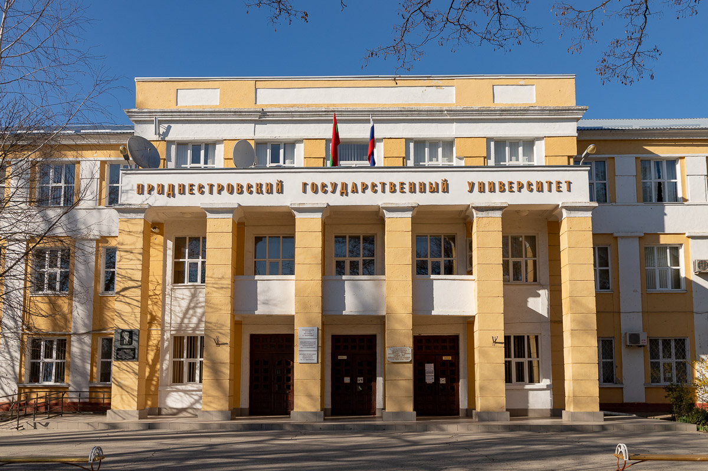

ПГУ им. Т.Г.Шевченко
ПГУ – правопреемник Тираспольского государственного педагогического института, основанного в 1930 году. Будучи первым высшим учебным заведением Советской Молдавии, институт занимался подготовкой педагогических кадров, крайне востребованных в то время. Приднестровский университет славится десятками поколений ученых, преподавателей и студентов, которые внесли достойный вклад в развитие науки, образования, культуры и общественно-политической жизни государства. Проходят десятилетия, меняются поколения выпускников, и каждое из них преумножает значение и авторитет Alma mater.
Сегодня ПГУ – это классический университет исследовательского типа с трёхуровневой системой образования, главным вектором которого является учебно-воспитательная, научно-исследовательская и инновационная деятельность. Основа современной концепции развития нашего вуза - это подготовка высококвалифицированных, конкурентоспособных специалистов, внедрение существующих и разработка новых информационно-коммуникационных технологий для учебной и научной работы, постоянная модернизация научно-исследовательской деятельности и дальнейшая интеграция в евразийское образовательное, научное и информационное пространство.
ВОЕННЫЙ ИНСТИТУТ ИМ. ГЕНЕРАЛ-ЛЕЙТЕНАНТА А. И. ЛЕБЕДЯ
Военный институт Министерства обороны ПМР является государственным военным образовательным учреждением высшего профессионального образования.Форма получения образования – очная, обучение осуществляется на русском языке. Кроме того, Военный институт осуществляет подготовку офицеров запаса из числа студентов-мужчин обучающихся на дневном отделении ПГУ им. Т.Г. Шевченко в возрасте до 27 лет. Учебный процесс включает теоретический и практический курсы обучения, а также учебный сбор при Военном институте. Подготовка осуществляется по трем военно-учетным специальностям.
Выпускникам (курсантам) Военного института Министерства обороны ПМР и студентам ПГУ им. Т.Г. Шевченко, прошедшим полный курс военного обучения, учебные сборы (стажировку) и сдавшим Государственные комплесные экзамены (выпускные экзамены), присваивается офицерское воинское звание “лейтенант”.
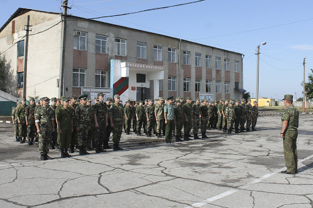
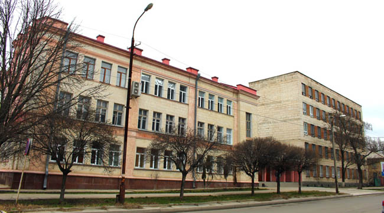
ПРИДНЕСТРОВСКИЙ ГОСУДАРСТВЕННЫЙ ИНСТИТУТ ИСКУССТВ ИМ. А. Г. РУБИНШТЕЙНА
ГОУ ВПО «Приднестровский государственный институт искусств им. А.Г. Рубинштейна», основанный в 1959 году как музыкальное училище, сегодня – единственный вуз в Приднестровской Молдавской Республике, осуществляющий образовательную деятельность по программам дополнительного, профессионального среднего и высшего образования в области художественного творчества, музыкального исполнительства и хореографии, социально-культурной деятельности. Плодотворную деятельность основных звеньев работы – учебной, научной, творческой и концертной – обеспечивает плеяда талантливых педагогов.
ТИРАСПОЛЬСКИЙ МЕЖРЕГИОНАЛЬНЫЙ УНИВЕРСИТЕТ
В настоящее время НУО ВППО "Тираспольский межрегиональный университет" является ключевым звеном в составе негосударственного сектора образовательной системы Приднестровья".
За это время ректорату, профессорско-преподавательскому составу и сотрудникам университета удалось создать и запустить программу непрерывного профессионального образования (СПО- ВПО), что дало, в свою очередь, возможность обеспечить подготовку и выпуск специалистов, легко адаптирующихся к системе мировых экономических и правовых связей, а также обусловило преемственность образовательного процесса и возможность получения высшего образования по сокращенной программе.
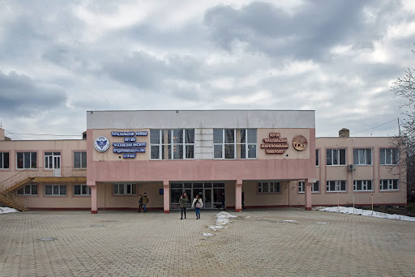
ТИРАСПОЛЬСКИЙ ФИЛИАЛ РОССИЙСКОГО НОВОГО УНИВЕРСИТЕТА
Российский новый университет (РосНОУ) включен в сотню лучших российских вузов Московского международного рейтинга вузов «Три миссии университета». Лицензия на право осуществления образовательной деятельности № 2120 от 28.04.2016 г. выдана Федеральной службой по надзору в сфере образования и науки, бессрочно.
Тираспольский юридический институт министерства внутренних дел ПМР им. М. И. Кутузова
В начале 90-х годов с распадом Союза ССР специализированные учебные заведения по подготовке кадров для правоохранительных органов стали частью образовательной системы вновь провозглашенных суверенных государств. В тоже время в молодой Приднестровской Республике остро стал вопрос о подготовке специалистов для органов внутренних дел.
В институте постоянно осуществляется подготовка курсантов по специальности «Правоохранительная деятельность» со специализацией «административно-правовая» и «оперативно-розыскная деятельность».
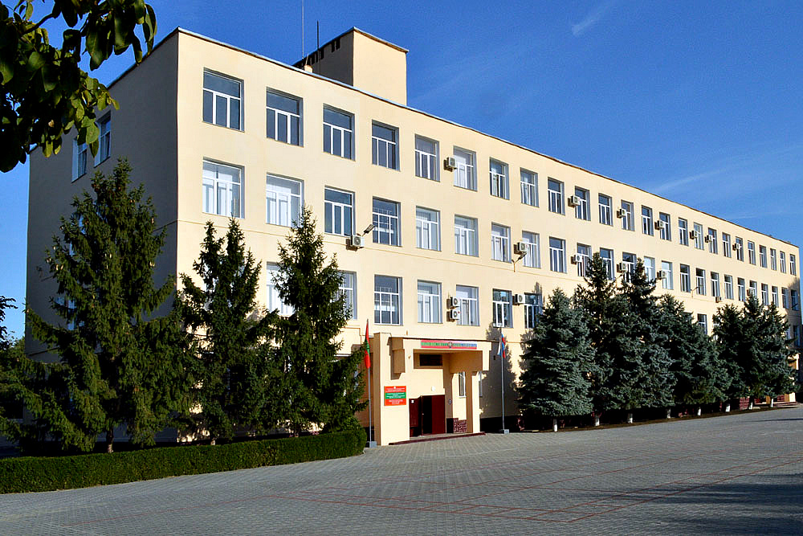
Средние специальные учреждения в г.Тирасполь
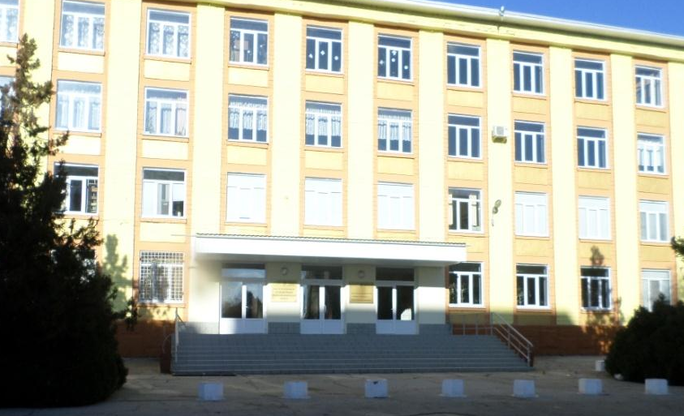
ПРИДНЕСТРОВСКИЙ КОЛЛЕДЖ ТЕХНОЛОГИЙ И УПРАВЛЕНИЯ
Государственное образовательное учреждение среднего профессионального образования «Приднестровский колледж технологий и управления» образовано Приказом министра просвещения Приднестровской Молдавской Республики от 30.05.2019 года № 493 «О реорганизации государственного образовательного учреждения «Тираспольский колледж бизнеса и сервиса» и государственного образовательного учреждения «Приднестровский промышленно-экономический техникум» в форме слияния.
В настоящее ГОУ СПО «Приднестровский колледж технологий и управления» – это современная организация профессионального образования, в которой впервые в Приднестровской Молдавской Республике внедрились элементы практико-ориентированного (дуального) обучения, где комбинируется теоретическое обучение на базе учебного заведения и практическое обучение на производственном предприятии.
ПРОМЫШЛЕННО-СТРОИТЕЛЬНЫЙ ТЕХНИКУМ
Техникум является правопреемником всех прав и обязательств Государственного образовательного учреждения «Тираспольский строительный лицей» и Государственного образовательного учреждения начального профессионального образования «Тираспольский машиностроительный лицей».
Техникум предлагает: Современные аудитории и мастерские, общежитие для проживания иногородних, спортивный комплекс и тир, одноразовое питание для обучающихся.
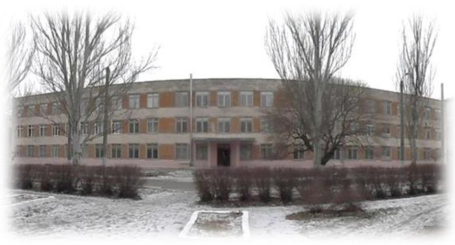
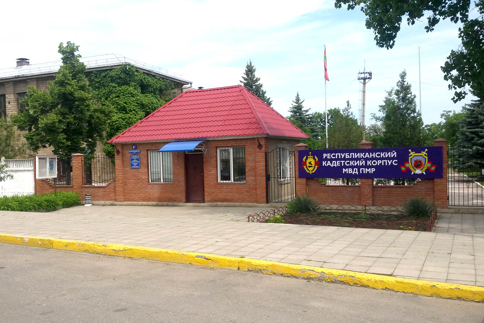
РЕСПУБЛИКАНСКИЙ КАДЕТСКИЙ КОРПУС
Вопрос о необходимости создания специализированного учреждения возник на пороге двухтысячных годов. Молодое государство нуждалось в подготовке профессиональных кадровых офицеров. В 2002 г. руководством МВД ПМР было принято решение об организации кадетского отделения при Тираспольском высшем юридическом колледже. В этом же году Правительство ПМР приняло Положение о кадетской школе-интернате. Главной задачей учебного заведения стала подготовка несовершеннолетних граждан к профессиональному служению в Органах внутренних дел Приднестровской Молдавской Республики.
Современный этап развития образования характеризуется возникновением новых типов образовательных учреждений, отдельное место среди которых занимают кадетские корпуса. Важную роль в организации кадетских корпусов сыграло возрождение лучших традиций, обычаев. Модель становления и развития воспитательной системы кадетского класса предусматривает новое содержание образования, восполняет необходимость мужского воспитания и обучения; военно-патриотическое воспитание, определяет условия для раскрытия и развития индивидуальных особенностей кадет; закладывает основы для подготовки несовершеннолетних граждан к служению отечеству на гражданском и военном поприще.
ТЕХНИКУМ ИНФОРМАТИКИ И ПРАВА
Техникум информатики и права – это система образовательно-развивающего пространства, обновленная временем и усилиями творческих людей, коллектива единомышленников, обладающих профессионализмом и эрудицией. Обучаясь в техникуме, вы вооружитесь не просто знаниями, а умениями адаптироваться к сложным конкурентным условиям рыночной экономики. Профессии юриста и специалиста в области информационных технологий популярны и востребованы в современном деловом мире.
Виды профессиональной деятельности: разработка модулей программного обеспечения для компьютерных систем, интеграция программных модулей, сопровождение и обслуживание программного обеспечения компьютерных систем, разработка, администрирование и защита баз данных.
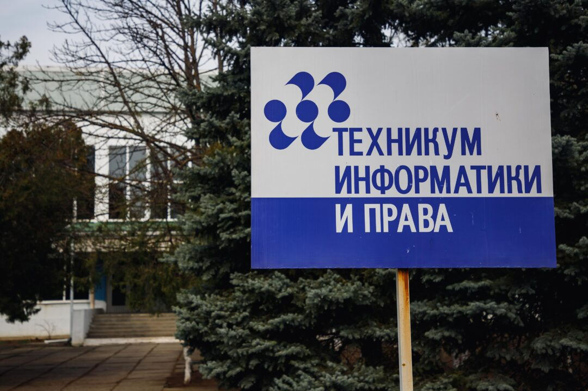
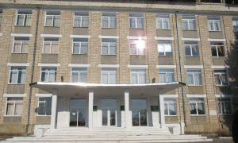
ТИРАСПОЛЬСКИЙ АГРАРНО-ТЕХНИЧЕСКИЙ КОЛЛЕДЖ ИМ. М. В. ФРУНЗЕ
Государственное образовательное учреждение «Тираспольский техникум информатики и права» имеет соответствующую материально-техническую базу для обучения специалистов в области информационно-коммуникационных технологий и права. Образовательный процесс организован в учебном корпусе. В составе используемых помещений имеются кабинеты, лаборатории, полигоны, мастерская для проведения практических, лабораторных занятий, учебной практики.
Учреждение образовано приказом Госкомитета Совета Министров МССР от 30.08.1974 года №213/183 как городское профессионально-техническое училище № 16 (ГПТУ № 16). ГПТУ № 16 приказом Госкомитета Совета Министров МССР № 263 от 05.09.1984 года переименовано в среднее профессионально-техническое училище № 64 (СПТУ № 64). СПТУ № 64 приказом Министерства народного образования ПМР от 08.02.1993 № 56 года переименовано в Тираспольский лицей-колледж легкой промышленности (ТЛКЛП) с 01.09.1993 года. ТЛКЛП приказом Министерства народного образования ПМР от 14.07.1997 года № 224 переименован в Тираспольский колледж легкой промышленности (ТКЛП) с 15.07.1997 года. ТКЛП приказом Министерства народного образования ПМР от 30.06.1999 года № 245 переименован в ГОУ «Тираспольский техникум информатики и права» с 01.07.1999 года.
ТЕХНИЧЕСКИЙ КОЛЛЕДЖ ИМ Ю. А. ГАГАРИНА
Технический колледж им. Ю.А. Гагарина начал свою деятельность 2 октября 1947г., как специальное ремесленное училище РУ-1, позднее преобразованное в ПТУ-5. В 1961 году ПТУ-5 присвоено имя первого в мире космонавта Юрия Алексеевича Гагарина.
Сейчас, когда вопрос о востребованности в специалистах профессионально-технического образования стоит особенно остро, учебное заведение готовит специалистов с полным средним образованием и профессиональной подготовкой. Обучение проходит на хорошо оснащенной учебной базе, по учебным планам и программам, соответствующим образовательным стандартам Российской Федерации. Для получения практических профессиональных навыков имеется солидная материальная база. Это мастерские (токарная, фрезерная, слесарная, электротехническая), компьютерные классы, лаборатории по каждой учебной дисциплине.
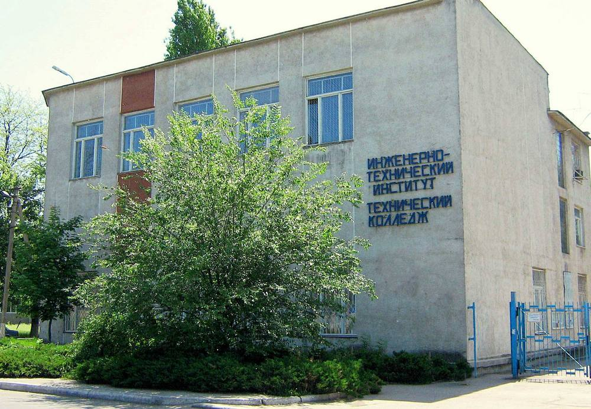
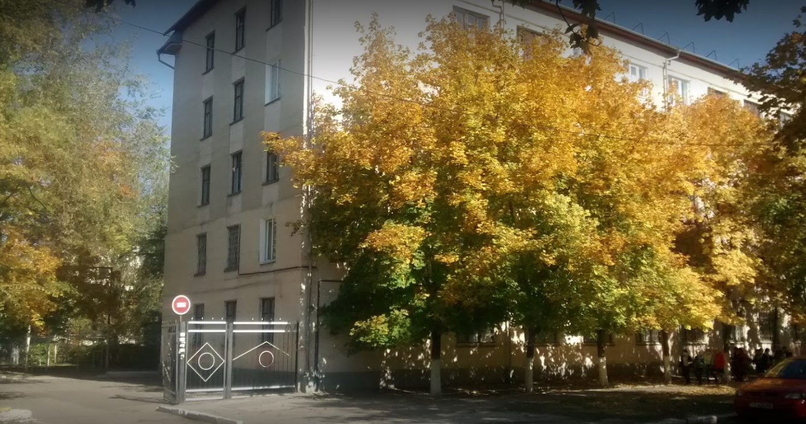
ТИРАСПОЛЬСКИЙ МЕДИЦИНСКИЙ КОЛЛЕДЖ ИМ. Л. А. ТАРАСЕВИЧА
Основной вид деятельности учреждения – образовательная подготовка медицинских работников и фармацевтов среднего звена. На базе ГОУ «Тираспольский медицинский колледж им. Л. А. Тарасевича» функционируют «Курсы специализации и усовершенствования средних медицинских и фармацевтических работников».
Так же на территории колледжа функционируют два музея: «Музей колледжа» и музей молдавской народной культуры «Каса маре». Имеются актовый зал, буфет, библиотека, читальный зал, спортивный и гимнастический зал, медицинский пункт (медицинский кабинет, изолятор, процедурный и зубной кабинеты), зал ЛФК, два компьютерных кабинета, кабинет психологической разгрузки, студенческое общежитие на 213 койко-мест.
ТИРАСПОЛЬСКИЙ ТЕХНИКУМ КОММЕРЦИИ
Техникум располагает технологической и химико-аналитической лабораториями, кабинетами технологического и торгового оборудования кабинетами экспертизы, товароведения продовольственных и непродовольственных товаров, бухгалтерского учета и экономики, менеджмента, организации торговли, компьютерным классом.
Сегодня техникум – многофункциональное заведение. Здесь готовят технологов общественного питания, поваров, кондитеров, официантов-барменов, коммерсантов, менеджеров общественного питания, товароведов-экспертов продовольственных и непродовольственных товаров, бухгалтеров торговли и общественного питания. Обучение ведется по дневной и заочной формам.
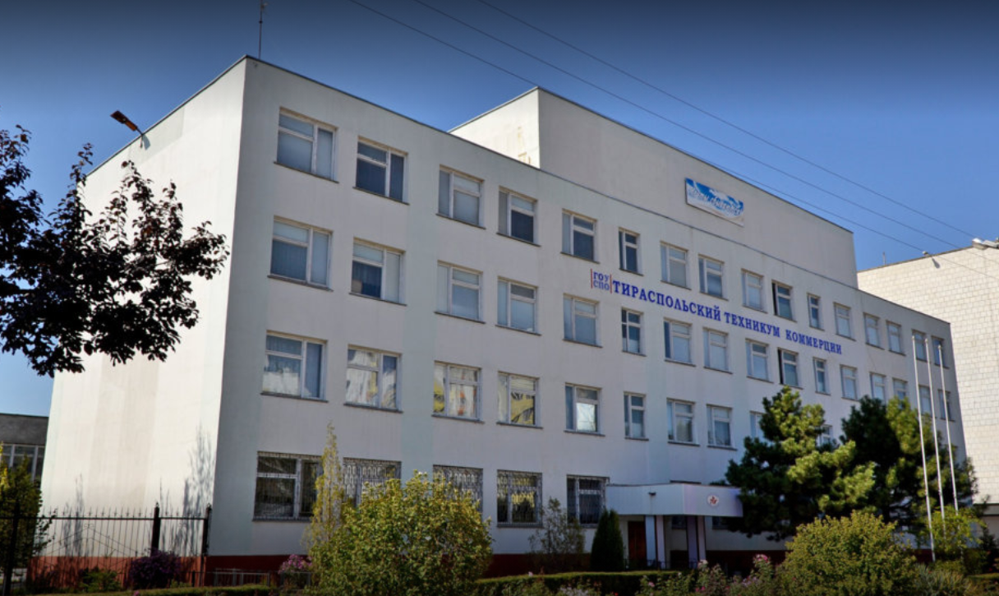
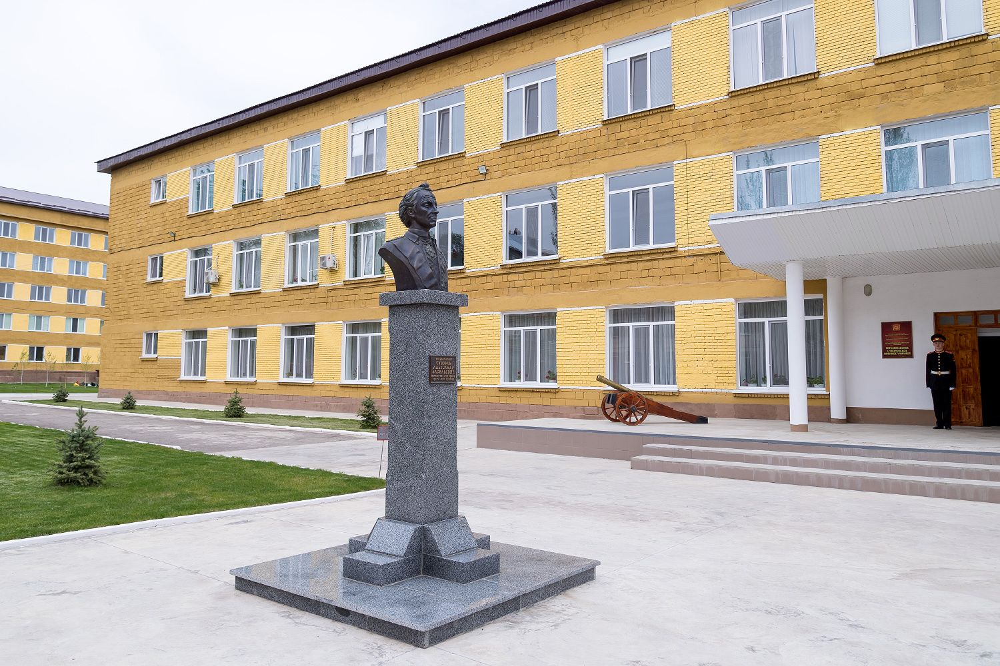
ГОУ «Тираспольское Суворовское военное училище»
Тираспольское суворовское военное училище - это военная академия и школа-интернат в частично признанной Приднестровской Молдавской Республике, которая служит военным училищем для молодежи в Вооруженных силах Приднестровья.
21 августа 1943 года было принято Постановление Совета народных комиссаров СССР и ЦК ВКП (б) № 901 « О неотложных мерах по восстановлению хозяйства в районах, освобождённых от немецкой оккупации», согласно которому для устройства, обучения и воспитания детей воинов Красной Армии, партизан Отечественной войны, а также детей советских и партийных работников, рабочих и колхозников, погибших от рук немецких оккупантов в Краснодарском , Ставропольском краях, Ростовской, Сталинградской, Ворошиловградской, Воронежской , Харьковской, Курской, Орловской, Смоленской и Калининской областях было создано девять суворовских военных училищ, типа старых дореволюционных кадетских корпусов, по 500 человек в каждом, всего 4500 человек со сроком обучения 7 лет, с закрытым пансионом для воспитанников.
Высшие учебные заведения в г.Бендеры
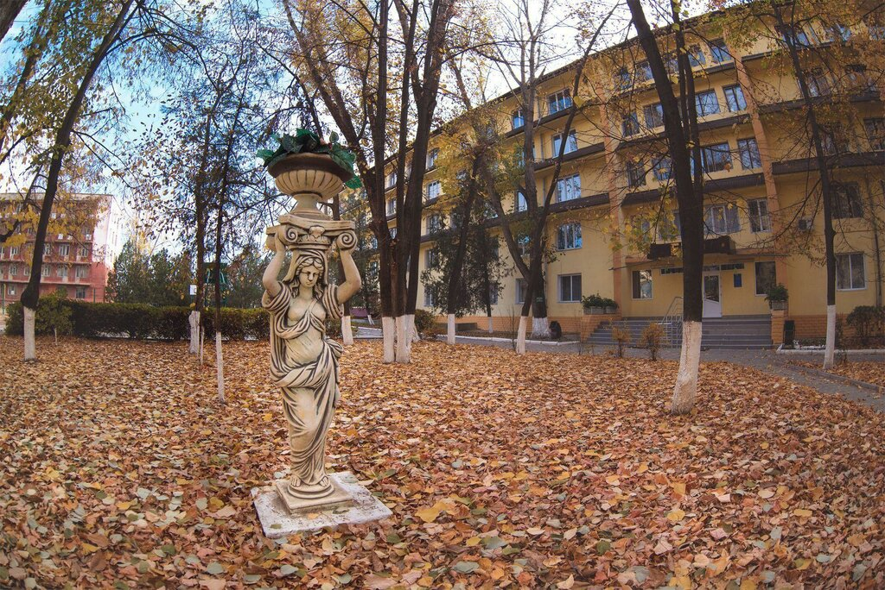
Бендерский политехнический филиал ПГУ им. Т.Г. Шевченко
Бендерский политехнический филиал государственного образовательного учреждения «Приднестровский государственный университет им. Т.Г. Шевченко» – социально ориентированное и адаптированное к современным экономическим условиям жизни учебное заведение.
Исторические вехи развития нашего учебного заведения, как подтверждают архивные документы, берут своё начало с 28 декабря 1944 года. Ещё шла Великая Отечественная война, когда Партией была поставлена задача восстановления народного хозяйства.За более чем полувековой период своего существования Бендерский политехнический филиал подготовил более 32 тысяч специалистов, многие из которых занимают руководящие должности, как в республике, так и за её пределами.
Средние специальные учреждения в г.Бендеры
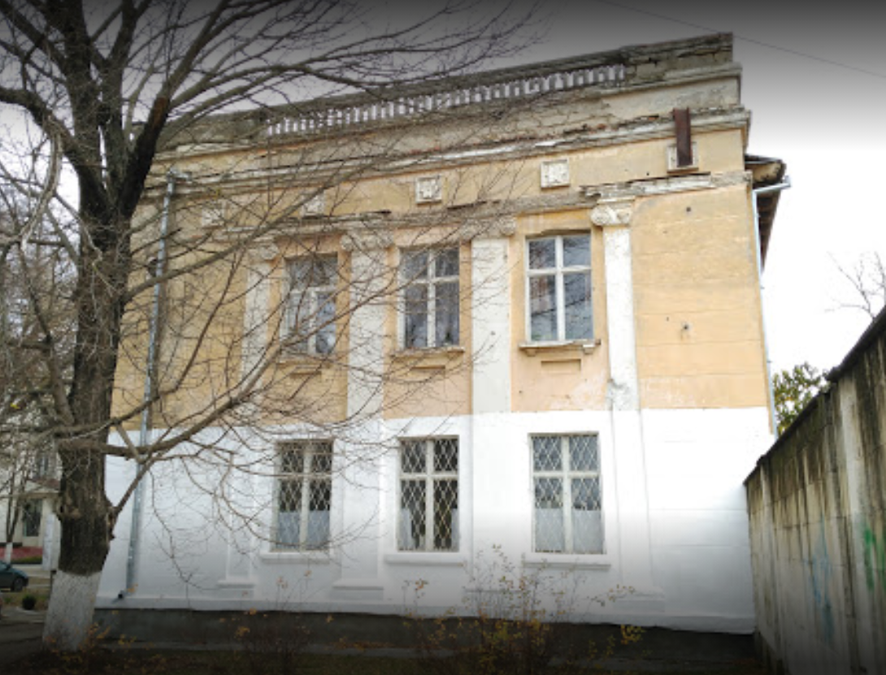
БЕНДЕРСКИЙ ВЫСШИЙ ХУДОЖЕСТВЕННЫЙ КОЛЛЕДЖ ИМ. В. И. ПОСТОЙКИНА
В настоящее время в коллективе педагогов учебного заведения трудятся заслуженные работники культуры и народного образования ПМР, заслуженные художники ПМР и отличные работники культуры ПМР, преподаватели с высшей и первой квалификационной категорией. Многие преподаватели отмечены грамотами Президента ПМР, Министра просвещения ПМР, Государственной службы по культуре ПМР, Тираспольско-Дубоссарской епархии, госадминистрации г. Бендеры, имеют государственные награды. Коллектив учебного заведения также неоднократно награждался грамотами, дипломами и благодарностями Государственной администрации г. Бендеры и Министерства просвещения ПМР. В 2004 году коллектив образовательного учреждения награжден Дипломом «Признание» Министерства Просвещения ПМР за весомый и значительный вклад в становление и развитие среднего звена специального художественного образования. Преподаватели и студенты регулярно участвуют в городских, республиканских и международных художественных выставках, конкурсах, конференциях, получают грамоты и дипломы.
БЕНДЕРСКИЙ МЕДИЦИНСКИЙ КОЛЛЕДЖ
Государственное образовательное учреждение «Бендерский медицинский колледж» – одно из старейших учебных заведений республики с повышенным уровнем профессионального образования.
В настоящее время это современная организация образования с развитой материально-технической базой, оснащенная кабинетами доклинической и клинической практик, лабораториями, библиотекой. Обучение ведется на русском и молдавском языках.
ГОУ «Бендерский медицинский колледж» предоставляет реальную возможность выпускникам 9 и 11 классов учиться бесплатно и трудоустроиться по выбранной специальности.
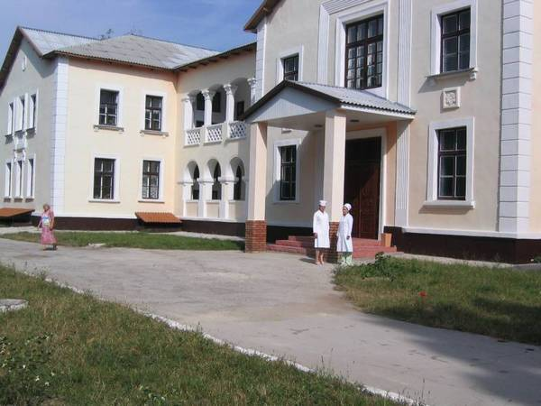
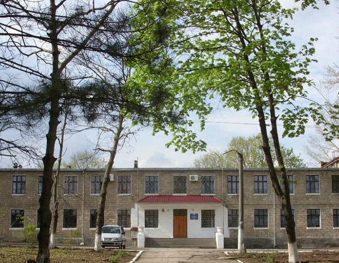
БЕНДЕРСКИЙ ПЕДАГОГИЧЕСКИЙ КОЛЛЕДЖ
Государственное образовательное учреждение среднего профессионального образования «Бендерский педагогический колледж» является правоприемником Бендерского педагогического училища, открытого в 1985 году в соответствии с распоряжением Совета Министров Молдавской ССР от 27 марта 1985 года № 73-р. Педагогическое училище готовило педагогов по специальностям «Преподавание в начальных классах» и «Дошкольное образование».
С 2017 года ГОУ СПО «Бендерский педагогический колледж» сотрудничает с Профессиональным колледжем г. Истра Московской области Российской Федерации – филиалом ГОУ ВО МО «Государственный гуманитарно-технологический университет» (Договор о сотрудничестве от 30.11.2017 года). С 15 июля 2019г. сотрудничает с Государственным бюджетным профессиональным образовательным учреждением «педагогический колледж №4 Санкт-Петерберга».
БЕНДЕРСКИЙ ТОРГОВО-ТЕХНОЛОГИЧЕСКИЙ ТЕХНИКУМ
ГОУ СПО "Бендерский торгово-технологический техникум" - это многоуровневая организация профессионального образования, занимающаяся подготовкой квалифицированных рабочих и специалистов среднего звена для ведущих отраслей экономики республики.
Техникум располагает хорошей материальной базой, это помещения, предназначенные для организации учебного процесса (лаборатории, мастерские, компьютерные классы) и помещения, обеспечивающие социально-бытовые условия для успешного пребывания студентов (столовая, общежитие, актовый и спортивный залы, библиотека и пр.)
Особенностью нашего техникума является то, что все получаемые в техникуме профессии и специальности связаны с творчеством, с красотой и здоровьем. Все знания, навыки и опыт полученный в рамках освоения профессии пригодятся и в повседневной жизни. Наши выпускники могут сытно накормить, одеть, обуть, сделать стильную прическу, помочь наладить деловые контакты по сбыту продукции и все это с творческим подходом.
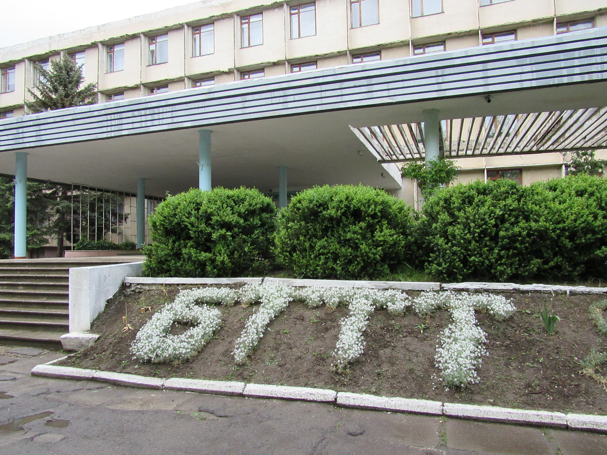
Высшие учебные заведения в г.Рыбница
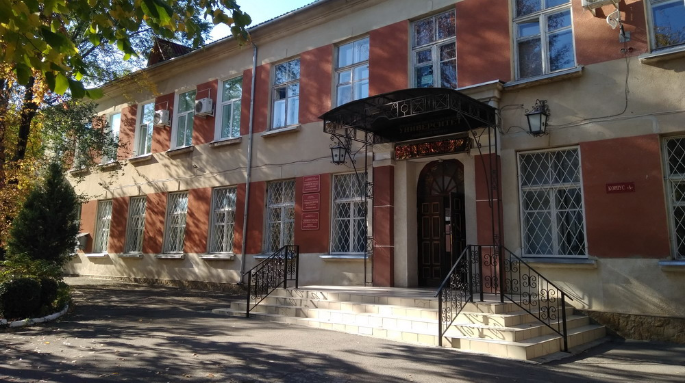
ПРИДНЕСТРОВСКИЙ ГОСУДАРСТВЕННЫЙ УНИВЕРСИТЕТ им. Т. Г. ШЕВЧЕНКО, РЫБНИЦКИЙ ФИЛИАЛ
Рыбницкий филиал ИГУ им. Т.Г. Шевченко основан в 1993 г. С 2004 г. в связи с современными потребностями рынка труда производится набор студентов на следующие специальности: «Дизайн» со специализациями «Графический дизайн», «Дизайн костюма» (квалификация «Дизайнер», срок обучения - 6 лет) и «Менеджмент организации» (квалификация «Менеджер», срок обучения - 5 лет, форма обучения - дневная и заочная). Обучение по всем специальностям осуществляется на бюджетной и договорной основе.
Сегодня Рыбницкий филиал располагает современной компьютерной техникой, аудиовизуальной аппаратурой, лабораториями, мастерскими и иной базой, необходимой для организации учебного процесса. За истекшее время существования, филиал стал ведущим научно-просветительским и образовательным центром северных районов Республики. Он объединяет пять кафедр: физики, математики и информатики; социально-экономических дисциплин; иностранных языков; декоративно-прикладного искусства и прикладной информатики.
Средние специальные учреждения в г.Рыбница
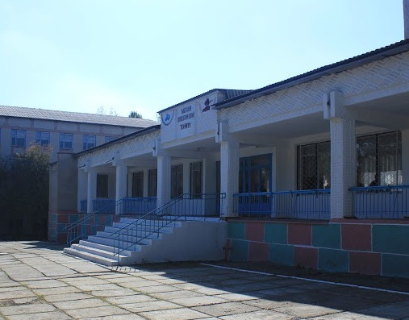
РЫБНИЦКИЙ ПОЛИТЕХНИЧЕСКИЙ ТЕХНИКУМ
Приказом Министерства просвещения ПМР №675 от 12 июля 2005г. Рыбницкому политехническому лицею изменен тип и соответственно название на государственное образовательное учреждение «Рыбницкий политехнический техникум»
Приказом Министерства просвещения ПМР №605 от 15.06.2012г. «О реорганизации организаций профессионального образования» государственное образовательное учреждение «Рыбницкий политехнический техникум» реорганизован путем присоединения к нему государственного образовательного учреждения «Рыбницкий строительный лицей» в государственное образовательное учреждение среднего профессионального образования «Рыбницкий политехнический техникум».
Средние специальные учреждения в г.Дубоссары
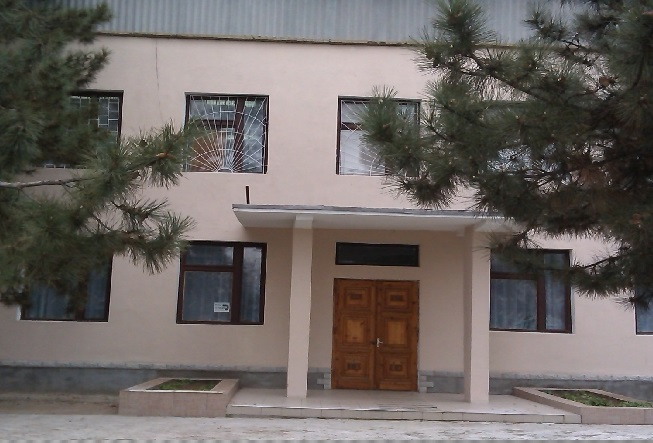
ГОУ СПО «ДУБОССАРСКИЙ ИНДУСТРИАЛЬНЫЙ ТЕХНИКУМ»
Сейчас обучение проходит с применением дистанционных образовательных технологий. Но несмотря на это проводится много республиканских мероприятий научного, творческого и спортивного направлений. Наши обучающиеся принимают активное участие и показывают неплохие результаты.
В техникуме ведется подготовка по программам среднего и начального профессионального образования.
Средние специальные учреждения в г.Каменка
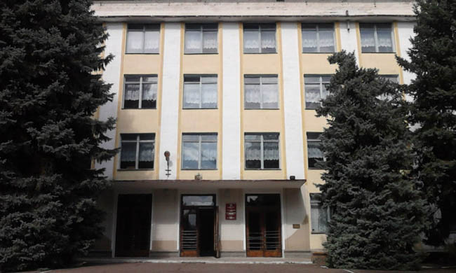
Каменский политехнический техникум им. И. С. Солтыса
Каменский политехнический техникум – старейшее учебное заведение Республики, готовящее кадры среднего звена для сельского хозяйства – специальность «Землеустройство», лесного хозяйства – специальность «Лесное и лесопарковое хозяйство», строительных отраслей «Мастер общестроительных работ», «Мастер отделочных работ», «Мастер столярно-плотничных и паркетных работ», «Мастер по комплексному ремонту зданий и сооружений», специалистов и рабочих для сферы обслуживания по специальности «Организация обслуживания в сфере сервиса» и по профессии «Повар-кондитер».
Истоки техникума уходят в далекое дореволюционное время, когда в селе Сахарна Резинского района (Республика Молдова) была основана сельскохозяйственная школа, готовящая агрономов для крупных помещичьих хозяйств. Учащихся насчитывалось не более 60-70 человек.
Средние специальные учреждения в г.Днестровск
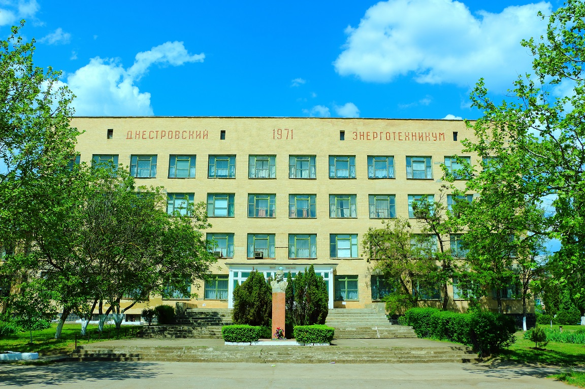
ДНЕСТРОВСКИЙ ТЕХНИКУМ ЭНЕРГЕТИКИ И КОМПЬЮТЕРНЫХ ТЕХНОЛОГИЙ
Государственное образовательное учреждение «Днестровский техникум энергетики и компьютерных технологий» объявляет набор абитуриентов.
Срок обучения – 3 года 10 мес. Бюджет/договор. 2.08.02.09 «Монтаж, наладка и эксплуатация электрооборудования промышленных и гражданских зданий» (квалификация: техник) бюджет/договор. 2.13.02.02 «Теплоснабжение и теплотехническое оборудование» (квалификация: техник–теплотехник). 2.13.02.03 «Электрические станции, сети и системы» (квалификация: техник-электрик). Срок обучения – 2 года 10 мес. Бюджет/договор. 2.08.02.09 «Монтаж, наладка и эксплуатация электрооборудования промышленных и гражданских зданий» (квалификация: техник). 2.13.02.01 «Тепловые электрические станции» (квалификация: техник–теплотехник). 2.09.02.04 «Информационные системы в промышленности» (квалификация: техник).
Средние специальные учреждения в г.Слободзея
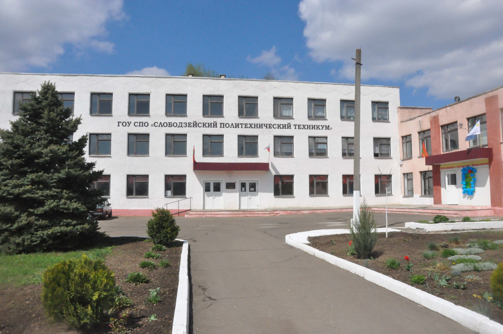